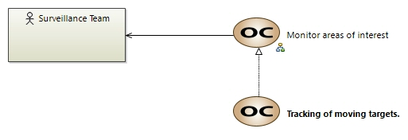

Tracking of moving targets.
OperationalCapability
Drone project > Drone project > Operational Analysis > Operational Capabilities > Tracking of moving targets. The client requires continuous, real‑time tracking of vessels flagged as suspicious.The client needs to track moving targets continuously once a vessel is flagged as suspicious. This involves maintaining a real‑time record of a vessel’s position, speed, and trajectory. For instance, if a vessel changes course to avoid detection, the system must maintain an uninterrupted tracking record, enabling operators to predict its future movements and coordinate timely interdiction measures. This capability is essential for ensuring that any evasive actions are captured and responded to promptly.
Owned diagrams
COC Tracking of moving targets
